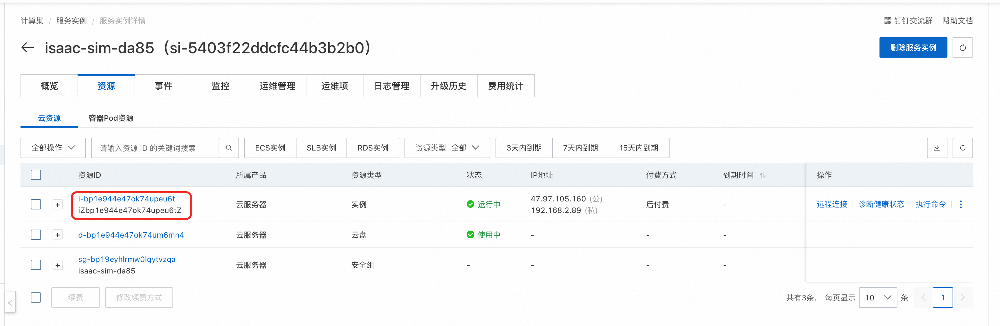
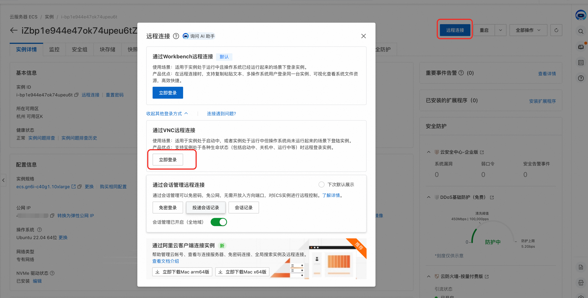
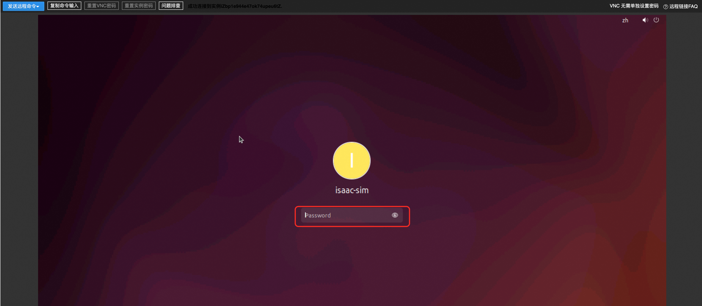
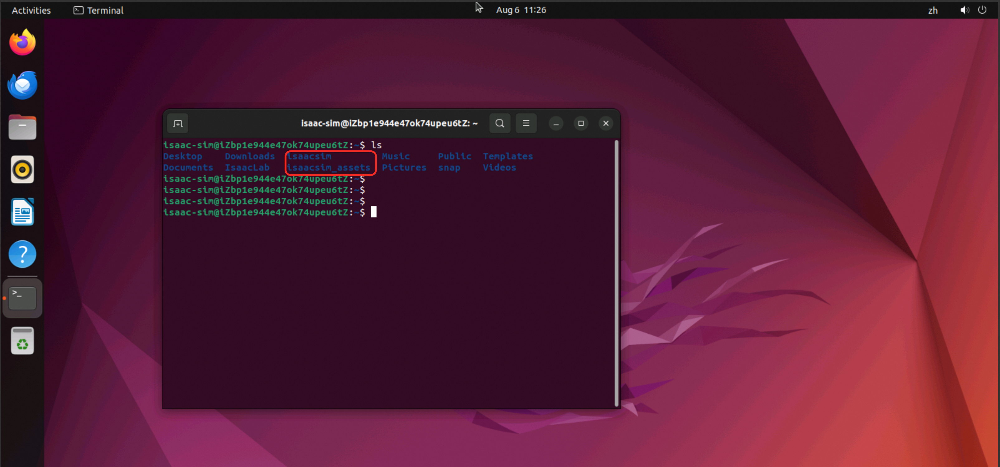
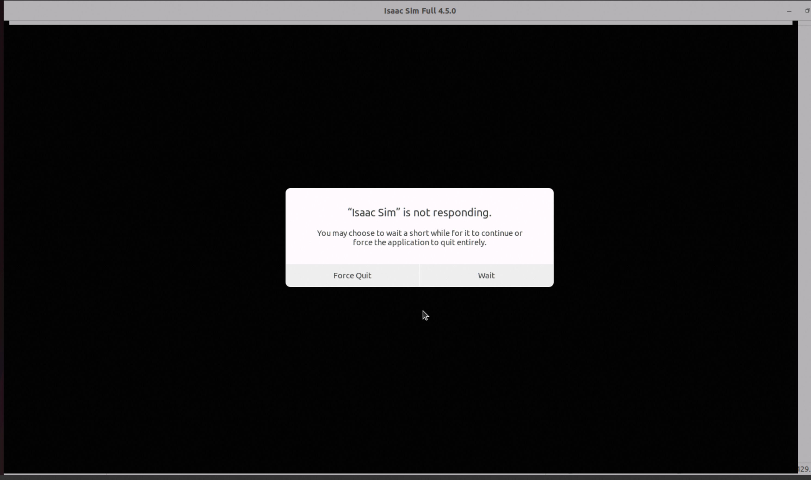
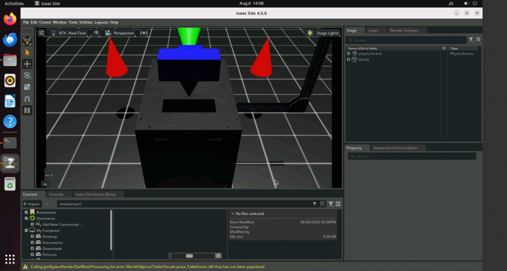

简介
NVIDIA Isaac™ Lab 是一个用于机器人学习的开源统一框架，旨在帮助训练机器人策略。
Isaac Lab 基于 NVIDIA Isaac Sim™ 开发，使用 NVIDIA®PhysX® 以及基于物理性质的 NVIDIA RTX™ 渲染提供高保真物理模拟。它弥合了高保真模拟和基于感知的机器人训练之间的差距，帮助开发者和研究人员更高效地构建更多机器人。
使用教程
Isaac Lab服务实例内置完整的Isaac Sim应用，支持两种训练模式：既可独立使用Isaac Sim进行仿真训练，也可基于Isaac Lab框架进行强化学习训练。
对应的ECS实例安装了Ubuntu图形界面，支持在ECS控制台通过VNC的方式直接使用。
VNC方式访问ECS实例
- 在服务实例详情页的资源中，找到对应的ECS实例，点击去到ECS控制台。

- 点击右上角的远程连接，选择VNC登录方式，即可进入到Ubuntu系统的图形界面。

- 这里需要输入isaac-sim账户对应登录密码，对应的密码和ECS实例密码一致，可以去服务实例概览页面查看。

Isaac Sim使用方式
通过上面的方式登录到ECS实例后，打开Terminal，可以看到isaac-sim账户下有isaacsim和isaacsim_assets两个目录。 - isaacsim目录为Isaac Sim的安装目录，里面有Isaac Sim相关的启动和训练脚本。 - isaacsim_assets目录为Isaac Sim的资源目录，这里做了提前下载，方便后面训练使用。

示例1: 以无GUI的方式进行场景合成数据集生成
该示例展示使用omni.replicator扩展生成合成数据集的过程。生成的数据将离线存储（在磁盘上），使其可用于深度神经网络的训练。示例可以在Isaac Sim的Python独立环境中运行，并利用Isaac Sim和Replicator创建离线合成数据集，用于训练机器学习模型。建议将官方示例代码拷贝到用户目录下进行修改及使用。
cd /home/isaac-sim
mkdir -p isaacsim_test
cd /home/isaac-sim/isaacsim_test
mkdir -p scene_based_sdg
cp -rf /home/isaac-sim/isaacsim/standalone_examples/replicator/scene_based_sdg/* /home/isaac-sim/isaacsim_test/scene_based_sdg/
## 渲染合成(--config指定配置文件路径，其中设置了headless=true；--/persistent/isaac/asset_root/default指定3D资产存储路径)
/home/isaac-sim/isaacsim/python.sh ./scene_based_sdg/scene_based_sdg.py --config="/home/isaac-sim/isaacsim_test/scene_based_sdg/config/config_coco_writer.yaml" --/persistent/isaac/asset_root/default="/home/isaac-sim/isaacsim_assets/Assets/Isaac/4.5"
生成结果存储在”./isaacsim_test/_out_coco“中，可视化效果如下：


示例2: 以GUI的方式使用Isaac Sim
在termial中执行以下命令，即可进入Isaac Sim的GUI界面。
cd /home/isaac-sim/isaacsim
./isaac-sim.sh
这里要注意的是，Isaac Sim启动的时候会比较慢，会弹出等待的窗口，不用进行操作，等待一段时间即可。

下面是按入门教程中的步骤创建了个正方体。

Isaac Lab的使用方式
Isaac Lab服务安装目录在/home/isaac-sim/IsaacLab中，里面有Isaac Lab的安装目录和启动脚本。
示例1： 使用无GUI模式训练智能体
本案例，我们将使用Stable-Baselines3强化学习（RL）框架，以解决Cartpole平衡控制的智能体任务。Stable-Baselines3是一个基于 PyTorch 的强化学习库，提供了多种稳定且易用的 RL 算法，如 PPO、SAC、DQN等。训练目标是，让智能体学习如何控制小车的左右移动，保持摆杆直立不倒。建议将示例代码拷贝到个人目录进行修改和调试。
cd /home/isaac-sim
mkdir -p isaaclab_test
cd /home/isaac-sim/isaaclab_test
mkdir -p sb3
cp -rf /home/isaac-sim/IsaacLab/scripts/reinforcement_learning/sb3/* /home/isaac-sim/isaaclab_test/sb3/
## 渲染合成(--config指定配置文件路径，其中设置了headless=true；--/persistent/isaac/asset_root/default指定3D资产存储路径)
/home/isaac-sim/IsaacLab/isaaclab.sh -p ./sb3/train.py --task Isaac-Cartpole-v0 --num_envs 64 --headless --video
训练结果保存到./logs/sb3/Isaac-Cartpole-v0中；可视化结果如下

示例2： 使用GUI模式生成基本物体到场景中
在Terminal中执行以下命令，即可进入Isaac Lab的GUI界面。
cd /home/isaac-sim/IsaacLab
./isaaclab.sh -p scripts/tutorials/00_sim/spawn_prims.py
